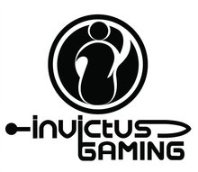

| 
2011年8月3日InvictusGaming正式宣布成立。Invictus Gaming(以下简称iG)是一家以电子竞技及周边业务为核心、旗下有多名国内顶级电子竞技选手的平台，iG的目标之一是打造全球顶级电竞俱乐部。目前iG已整合前CCM电竞俱乐部Dota、星际争霸2(SC2)、英雄联盟(LOL)项目所有队员。 经过多年观察，目前电子竞技产业的发展正处于混沌期，频频出现俱乐部运营不良从而倒闭、拖欠选手工资、赛事不正规拖欠奖金等问题，iG的成立标志着这个时代将会结束。iG会以擅长管理和运营的精英团队为基础，为电竞选手搭建一个高端全面的发展和转型平台，彻底消除选手对于训练不规范、待遇不合理、收入无法保证、奖金无法兑现、退出竞技舞台后前途未卜等顾虑。iG将会全面包装并大力推广旗下电竞选手，负责选手的代言、出赛、线下活动等商业活动的策划方案及组织等经纪业务。本俱乐部拥有丰富的合作伙伴资源，包括各行业众多大型企业、集团等，力求将选手价值和利益最大化并在选手退役之后为选手提供一个急需效力于中国电竞的机会。 曾获荣誉 2012西雅图国际邀请赛冠军 2012G联赛第一赛季冠军 2012ACE S1冠军 2011ESL年度总决赛冠军 2011SMM世界总冠军 2011WCG中国赛区亚军 |